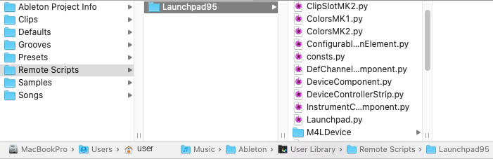
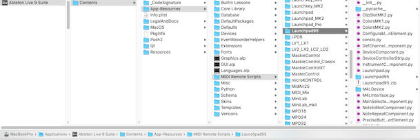

F.A.Q.
- 1. Which Launchpads are supported?
- Launchpad, Launchpad S, Mini, Mini MK2 and MK2 (RGB), Mini MK3 and Launchpad X: basically every Launchpad but the Pro. The Launchpad Pro is supported by Launchpad Pro95.
- 2. Which Ableton Live versions are supported?
- Live 11 and later, Mac or Windows, Intro, Standard or Suite. Live 9.2 to 10 are served by the archived Live 9/10 release, which no longer changes.
From time to time Ableton changes Live's Python API without notice, and Launchpad95 may stop working. If it stopped working after a Live update, download the latest version, and if that does not help, open an issue. - 3. Where should I put the script?
- In Live's browser, go to your User Library and create a folder Remote Scripts. Right-click this folder and select Show in Finder / Show in Explorer. Copy the Launchpad95 folder there.

- 4. Where should I put the script for Live 9 (archived release)?
-
Live 9 installs the script inside the Live application
On Windows: inside
C:\ProgramData\Ableton\Live 9 Suite\Resources\MIDI Remote Scripts.
On a Mac, right-click the Live application you use (there may be more than one installed!) and select Show Package Contents, then browse toApp-Resources/MIDI Remote Scripts.Inside this
MIDI Remote Scriptsfolder you should have a folder calledLaunchpad95, holding a bunch of.pyfiles, and for each of them a.pycfile (the compiled version that Live makes as it starts).Sometimes a picture is worth 1000 words. On a Mac it looks like this:

On a PC like that:

- 5. I installed everything, but the Launchpad does not light up when I select Launchpad95 in Live's settings. What is wrong?
- It is hard to guess what went wrong; the install is probably not quite right. Try installing from scratch: download, unzip, copy, restart Live. Things to check:
- that you installed it in the right place (see question 3);
- the folder name AND its full path (again, see the picture in question 3);
- how many versions of Live you have installed;
- that you run Live 11 or later (for Live 9.2 and 10, the archived release; for Live 8, Launchpad85, no longer maintained);
- on a Launchpad X or Mini MK3, that Input and Output are the MIDI port, not the DAW port (see Setup).
- 6. I installed everything, but Launchpad95 does not appear in the Control Surface list. What is wrong?
- See question 5.
- 7. Note feedback does not work in the Instrument Controller
- Make sure the Launchpad MIDI input and output have Track turned on in Live's MIDI settings.
- 8. Live 8?
- Live 8.4 had its own version, Launchpad85, which is no longer maintained.